Primero el dato. Después la cámara.
Analizamos los datos de tu empresa —ventas, CRM, punto de venta, redes— para saber a quién hablarle, con qué producto y en qué momento. Gobernanza, arquitectura, limpieza, modelos y segmentación. Recién ahí entra la cámara.
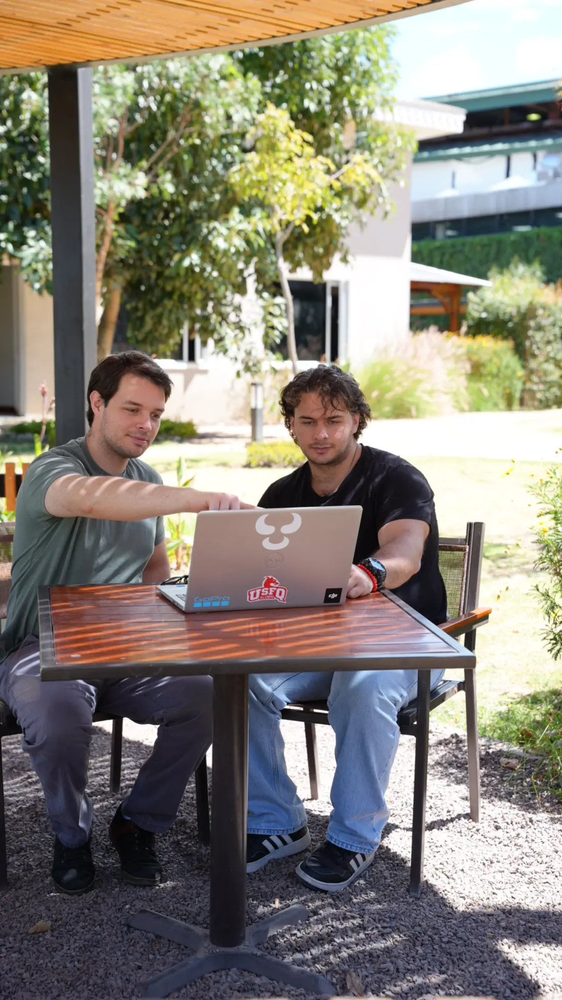
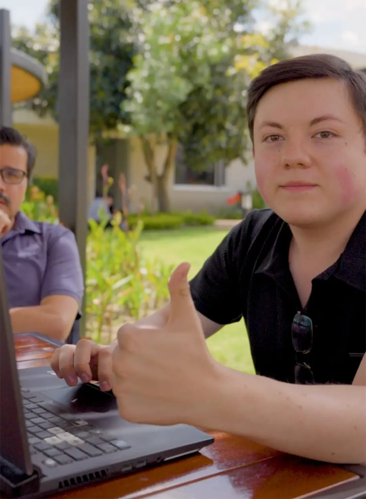
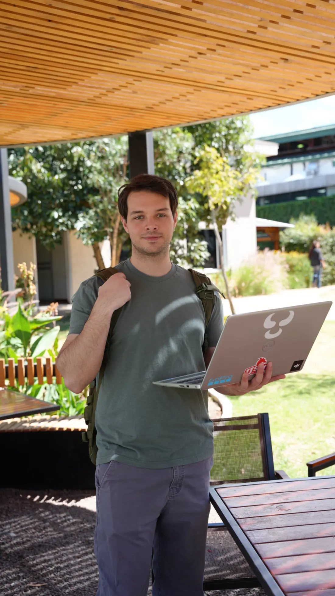
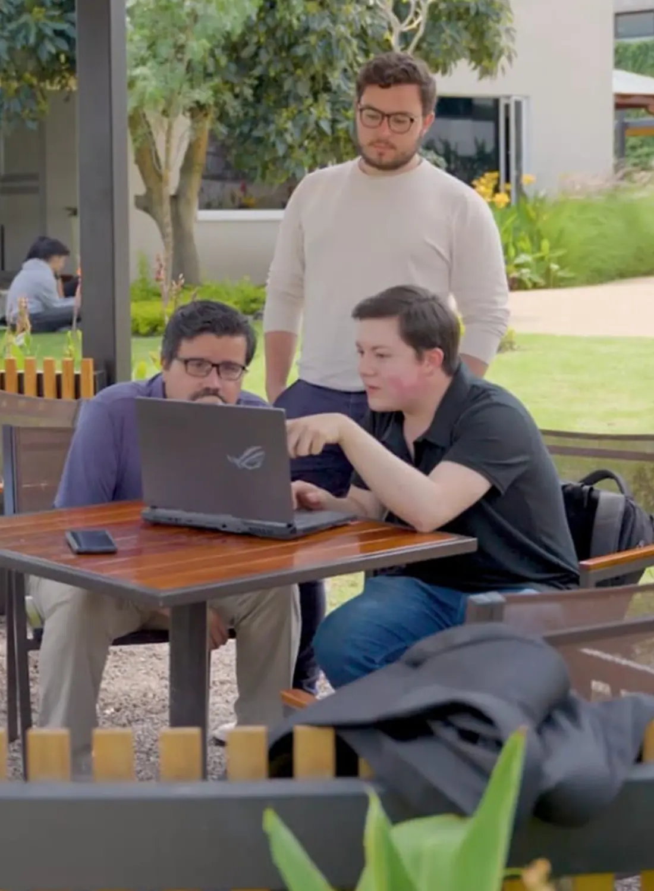
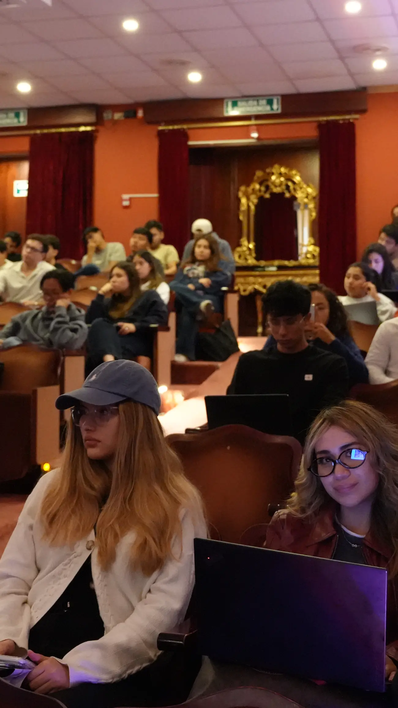
Un rollo que nunca se corta.
El video es una etapa, no todo el servicio. Toca cada punto para ver qué hacemos ahí y qué recibes al final de esa etapa.
Diagnóstico
Revisamos qué datos tiene la empresa, dónde están y en qué estado llegan.
De la base de datos al guion.
Antes de escribir un guion, la información pasa por cinco estaciones. Si esa cadena no existe, el insight tampoco.
Fuentes
Ventas, CRM, web, punto de venta y redes en un solo inventario.
Gobernanza
Quién puede ver qué, cómo se nombra cada campo y quién responde por él.
Limpieza
Duplicados fuera, formatos parejos, huecos resueltos. Sin esto, nada de lo demás sirve.
Modelos
Segmentación, recomendación y predicción de recompra sobre datos ya confiables.
Insight
Una conclusión clara que se convierte en el brief del rodaje.
Cada grupo de clientes tiene su plano.
Los grupos salen del modelo, no de la intuición, y cada uno recibe su propia pieza. Pasa el mouse por una tarjeta para ver a qué clientes le habla.
Segmentación de clientes
Datos de ejemploCada punto es un cliente. Los grupos salen del modelo, no de la intuición.
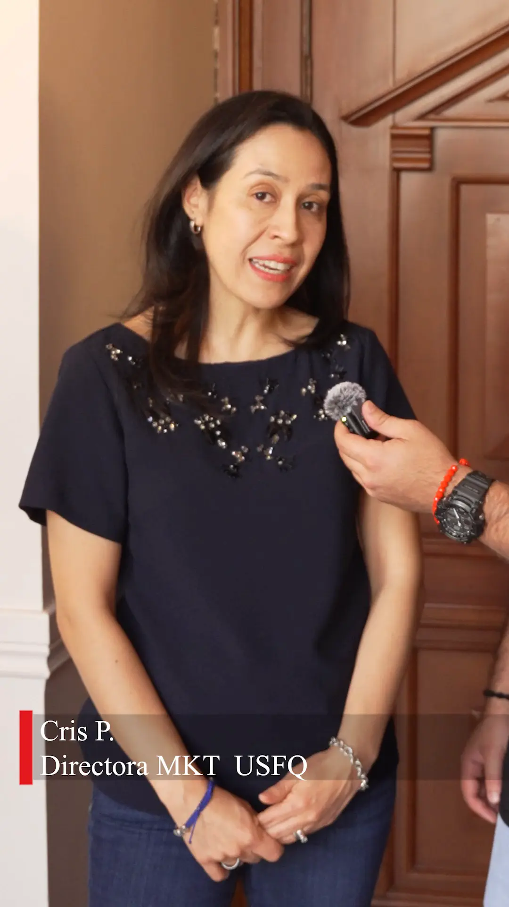
Compran seguido y gastan más. No necesitan que les expliques quién eres.
Testimonio + producto nuevo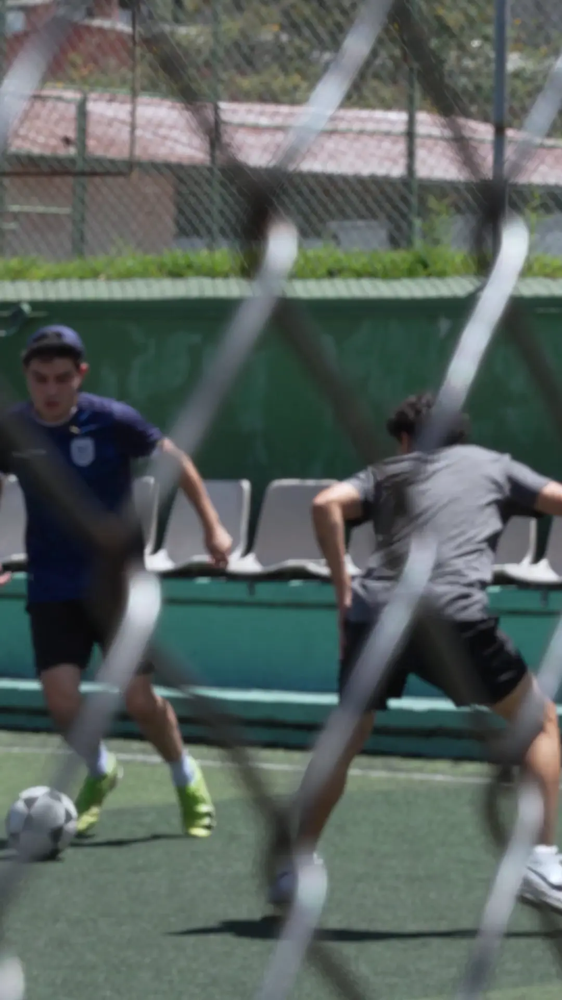
Aparecen en temporada. Hay que recordarles por qué volvieron la vez pasada.
Reel corto + oferta de temporada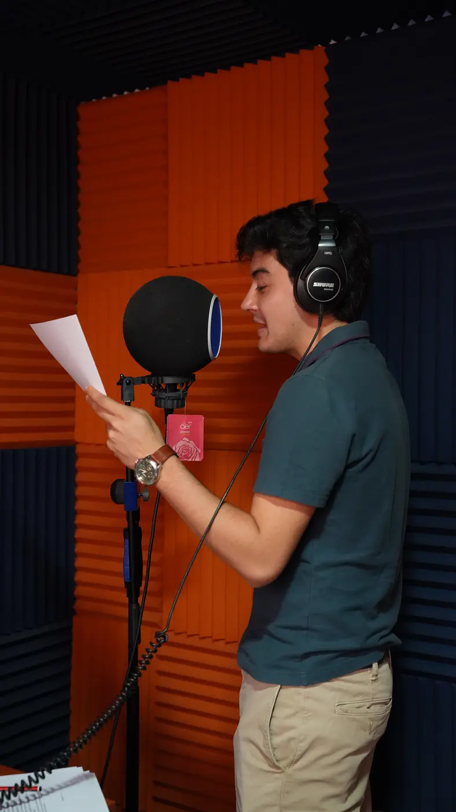
Ticket alto en la primera compra. Están evaluando si quedarse.
Video de marca + detrás de cámarasLa campaña se corrige en el camino.
Medimos contra el objetivo y ajustamos mientras la campaña corre. Cada marca es un cambio que decidimos con datos, no a mitad de mes y a ciegas.
Resultado semanal de la campaña
Datos de ejemploLas líneas punteadas marcan los momentos en que el análisis cambió la producción.
v1 · lanzamiento
Piezas generales para toda la base.
v2 · nuevo gancho
El modelo mostró caída temprana: se rehízo el arranque.
v3 · segmento nuevo
Apareció un grupo con ticket alto: piezas propias para ellos.
El primer entregable, antes de filmar nada.
El primer entregable es el estado real de tus datos. Se contrata solo, y es la puerta de entrada al resto del servicio.
Un equipo formado para las dos mitades.
La analítica no es un agregado: es la formación principal del equipo. Es un equipo altamente capacitado para dar este servicio, y por eso la campaña y el rodaje salen del mismo análisis.
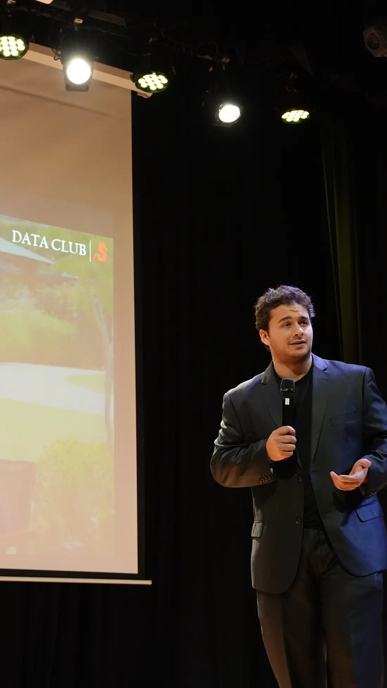
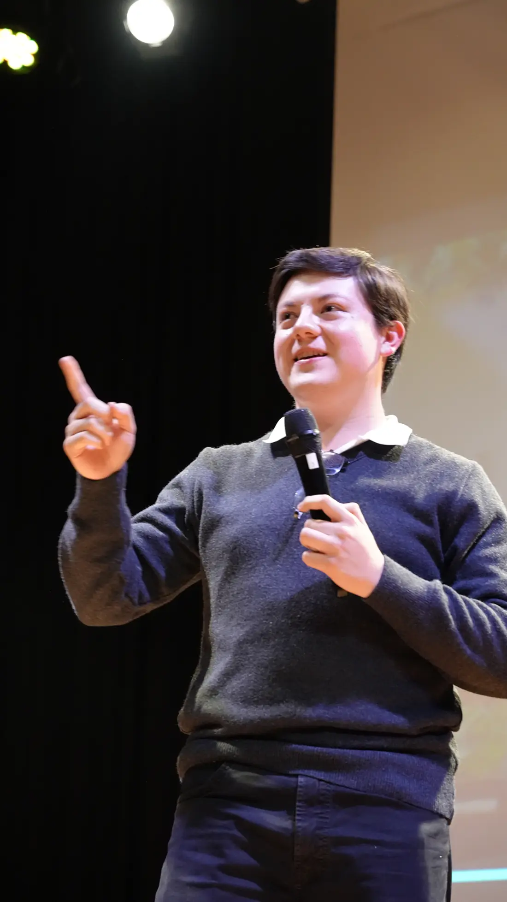
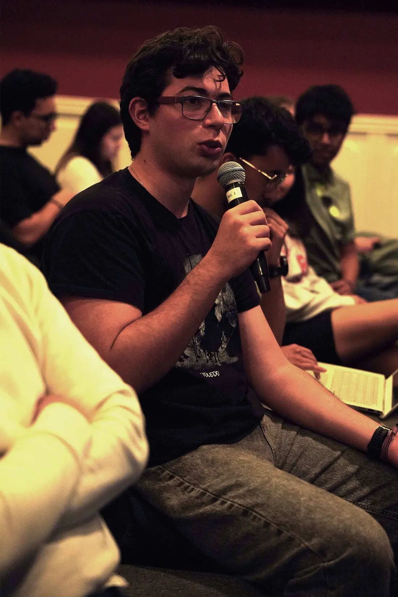
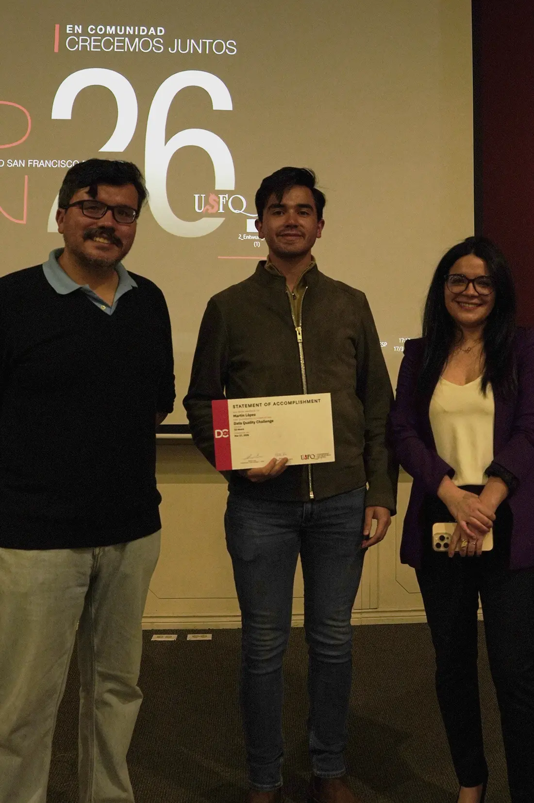
Máster en Business Analytics
Formación de posgrado en analítica de negocios, aplicada a decisiones comerciales reales.
Analítica de CRM y BI
Experiencia profesional en análisis de clientes, sistemas de recomendación y reportería para dirección.
Modelos y segmentación
Limpieza, modelado y machine learning aplicados a bases de clientes, no a ejercicios de clase.
Producción propia
El mismo equipo dirige, filma y edita: el insight no se pierde al pasar de manos.
Formación USFQ. Fundadores del Data Club.
Marketing, Finanzas y minor en Análisis de Datos, más la Maestría en Business Analytics — toda la formación en la Universidad San Francisco de Quito. Ahí mismo fundamos el club de análisis de datos de la universidad.
@datausfq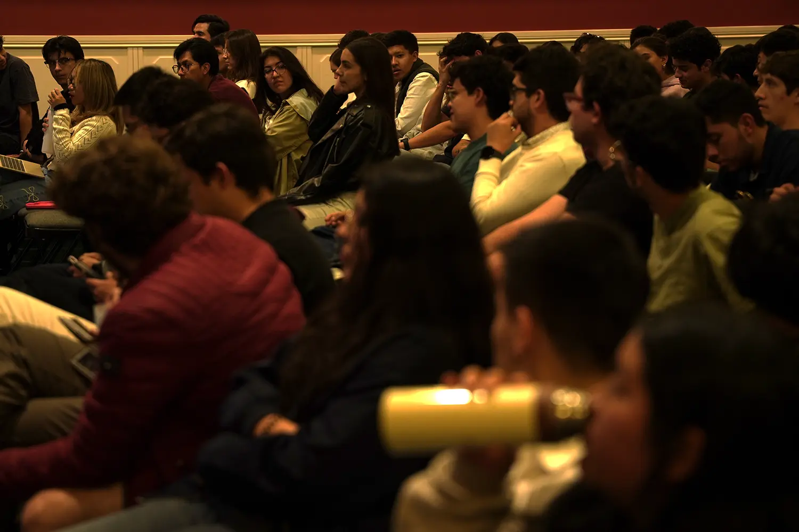
El mismo equipo que enseña el dato es el que filma.
Qué hace falta de tu lado.
Nada de plataformas nuevas: con los sistemas que la empresa ya usa alcanza para empezar.
Acceso de lectura
Ventas o CRM, aunque sea un exporte mensual en Excel.
Un objetivo del negocio
Qué producto mover, qué cliente recuperar, qué mes levantar.
Una campaña anterior
Para comparar contra algo y mostrar el seguimiento.
Permiso del cliente
Para publicar cifras con nombre de marca, o mostrarlas en porcentaje.